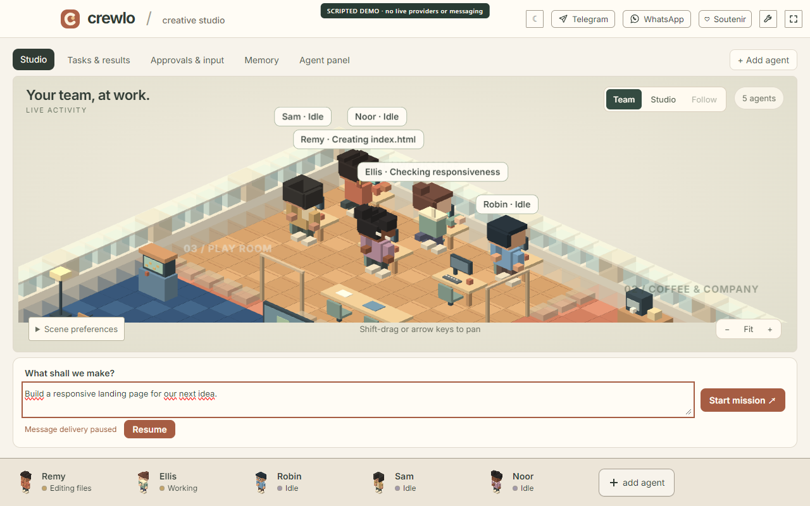

THE WORK, MADE VISIBLE
See the work
as it happens.
Activity labels come from execution events, so you can see what supported agents are actually doing. The studio gives those sessions a place to belong.
- Named agents and readable activities
- Team, studio and follow views
- A mission composer with room to think